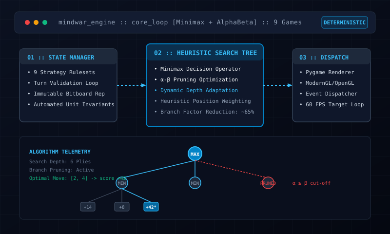

MindWar Arena — Modular Strategy Game Engine
Python 3 · Minimax Search · Alpha-Beta Pruning · Pygame · Automated Testing
I built MindWar Arena as an extensible board game engine in Python. Rather than hardcoding rules for a single game, the engine provides a decoupled state-machine interface that currently powers 9 deterministic strategy games. To make the AI challenging and fast, I implemented Minimax with Alpha-Beta pruning (cutting roughly 65% of sub-optimal branches), backed by an automated test suite that validates moves and win conditions.
In multi-game systems, rule enforcement often gets tangled with UI rendering, leading to state bugs and major slowdowns when an AI evaluates moves several plies ahead.
I isolated game rules behind clean state interfaces, implemented Alpha-Beta pruning with custom position heuristics, and wrote automated unit tests for state verification.
